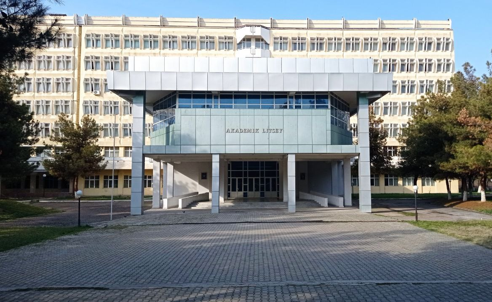

TDTU AL - Toshkent Davlat Texnika Universiteti Akademik Litseyi
Akademik litsey kompyuterlashtirish va axborot texnologiyalari sohasida ishlash uchun kadrlar tayyorlashdan iborat birinchi litseydir. Akademik litseyda matematika, fizika, informatika va ingliz tilini o‘rganishga tabaqalashtirilgan yondashuv joriy etildi. Talabalar tadqiqot ishlariga jalb qilingan. Kompyuter texnologiyalari akademik litseyi davlat va jahon ta’lim standartlari talablariga javob beradigan nufuzli ta’lim muassasalaridan biri sanaladi.
-

Listey bosh binosi
Litseyimizning bosh binosi o‘zining go‘zalligi va funksionalligi bilan e’tiborni tortadi. U institut binosi bilan birlashtirilgan boʻlib, talabalarga kengroq oʻquv resurslari, kutubxona va laboratoriyalardan foydalanish imkoniyatini beradi. Bu talabalar bilim va tajriba almashishi, ularning intellektual rivojlanishiga yordam beradigan umumiy ta'lim hamjamiyatini yaratadi.
-
Bizning yonalishlar
Litseyimiz ikkita yo'nalishni taqdim etadi: texnologiya va iqtisod, texnologiya asosiy hisoblanadi. Biz muhandislik, informatika va boshqa texnik fanlar bo'yicha keng ko'lamli daraja dasturlarini taklif qilamiz, talabalarni talab qilinadigan texnologiya martabalariga tayyorlaymiz. Iqtisodiyot treki ham mavjud bo'lib, u talabalarning ta'limini to'ldiradi va ularga biznes va moliya haqida tushuncha beradi.
-
Litsey qulayliklari
Litseyimizda o‘quvchilar uchun juda yaxshi sharoit yaratilgan. Bizda ma'ruzalar va taqdimotlar o'tkaziladigan katta auditoriyalar mavjud bo'lib, ular o'rganish uchun qulay joy yaratadi. Oshxona barcha talabalar va xodimlar uchun qulay sharoitda tushlik qilish va muloqot qilishlari uchun keng o'rindiqlarni taqdim etadi. Uzoq koridorlar faoliyatlar o'rtasida harakatlanish qulayligini, shuningdek, sotsializatsiya uchun joyni ta'minlaydi.